Songyang, Zhang
| 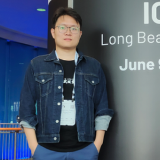 | Songyang, Zhang |
Biography
I am currently a Postdoctoral Research Fellow at Shanghai AI Laboratory, worked with Dr. Kai Chen and Prof. Dahua Lin.
I obtained my Ph.D. in Computer Science at the University of Chinese Academy of Science, in the joint program at PLUS Lab, ShanghaiTech University, China, under the supervision of Prof. Dr. Xuming He. My research interests include visual recognition with limited data and model architecture design. I obtained the B.Sc. degree in 2017 at the MC^2 Lab, Beihang University, P.R. China, under the supervision of Prof. Dr. Mai Xu. I also worked as a Research Intern in TuSimple, Nullmax AI, Tencent YouTu Lab, and Megvii Research.
Our team focus on foundation model of computer vision at OpenMMLab. Open positions at OpenMMLab include full-time researchers/engineers and interns. If you are interested in joining OpenMMLab, please feel free to contact me through the email. Research directions include: model architecture design, self/semi/weak-supervised learning, 2d/3d detection, segmentation, etc.
News
- Two papers on Semantic Correspondence and Video Quality Assessment are accepted by ECCV 2022.
- One paper on Few-shot Video Segmentation is accepted by ICIP 2022.
- I have joint Shanghai AI Laboratory as a postdoctoral research fellow.
- One paper on Transformer-based Scene Graph Generation is accepted by CVPR 2022. [Paper]
- We won the 1st Place on System Design Contest(SDC) @ DAC 2021. [Webpage]
- We won the 2nd Place on LVIS Challenge @ ICCV 2021. [Webpage]
- I have been selected to ICCV 2021 Doctoral Consortium.
- One paper on Vision Transformer is accepted to NeurIPS 2021. [Paper]
- One paper on Incremental Semantic Segmenntation is accepted to ACM MM 2021. [Paper]
- We won the 1st Place on Streaming Perception Challenges (Workshop on Autonomous Driving at CVPR 2021). [Report]
- One paper on Few-shot Video Classification is accepted to IJCAI 2021. [Paper]
- One paper on Scene Graph Generation is accepted to CVPR 2021. [Paper]
- One paper on Long-tail Visual Recognition is accepted to CVPR 2021. [Paper]
Publications
| 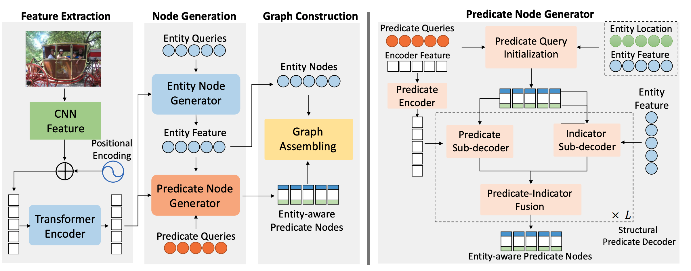 |
SGTR: End-to-end Scene Graph Generation with Transformer |
| 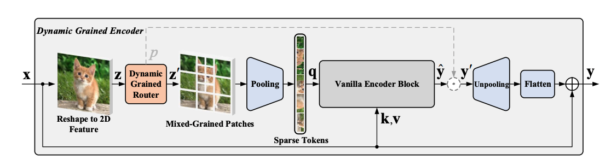 |
Dynamic Grained Encoder for Vision Transformers |
| 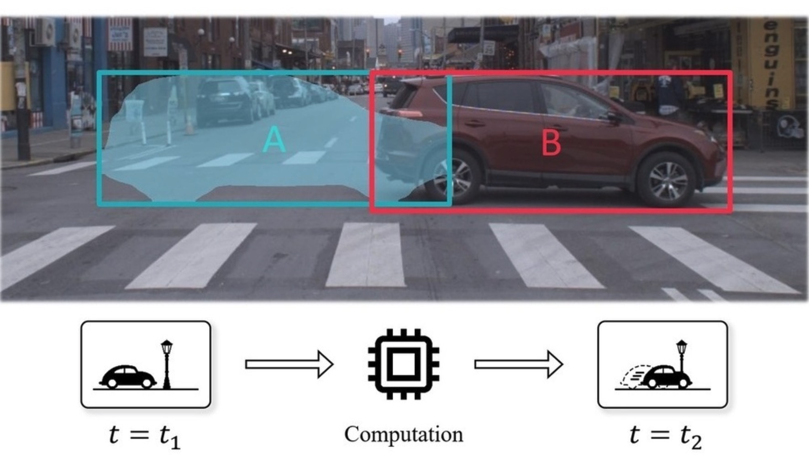 |
Workshop on Autonomous Driving at CVPR 2021: Technical Report for Streaming Perception Challenge |
| 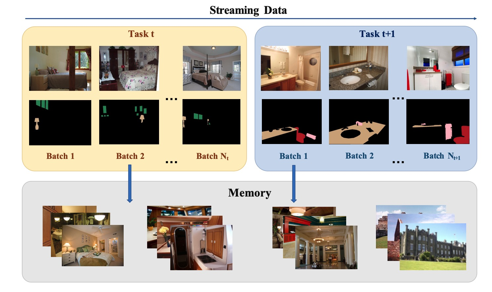 |
An EM Framework for Online Incremental Learning of Semantic Segmentation |
 |
Learning Implicit Temporal Alignment for Few-shot Video Classification |
| 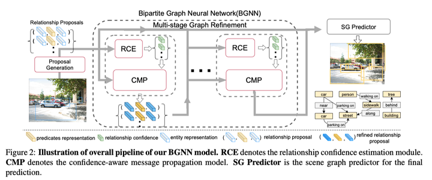 |
Bipartite Graph Network with Adaptive Message Passing for Unbiased Scene Graph Generation |
| 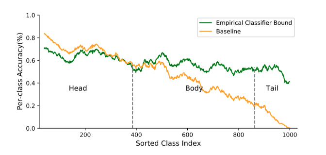 |
Distribution Alignment: A Unified Framework for Long-tail Visual Recognition |
| 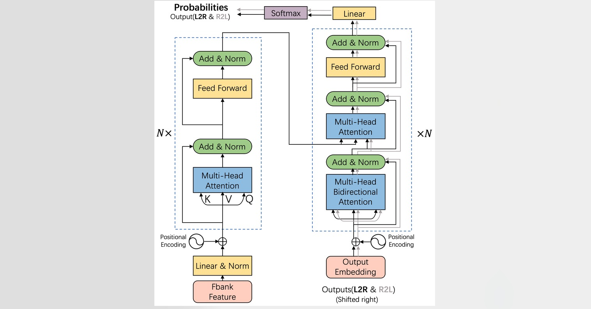 |
Transformer with Bidirectional Decoder for Speech Recognition |
| 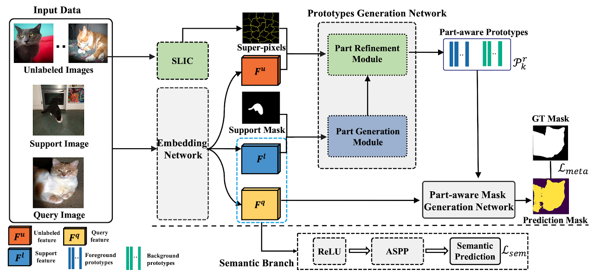 |
Part-aware Prototype Network for Few-shot Semantic Segmentation |
 |
LatentGNN: Learning Efficient Non-local Relations for Visual Recognition |
 |
A Dual Attention Network With Semantic Embedding for Few-shot Learning |
| 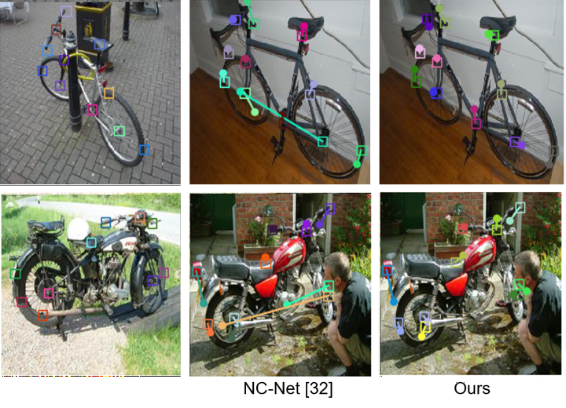 |
Dynamic Context Correspondence Network for Semantic Alignment |
| 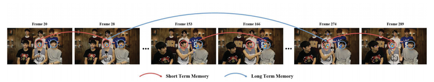 |
Predicting Salient Face in Multiple-face Videos |
Awards and Honors
- The 1st Place onSystem Design Challenge, DAC 2021. [Certificate]
- The 1st Place on Streaming Perception Challenge , Workshop on Autonomous Driving at CVPR 2021. [Certificate]
- National Scholarship, P.R. China. (2019)[Certificate]
- Outstanding Graduate Award, Beijing, P.R. China. (2017) [Certificate]
- National 1st Prize, Challenge-Cup National College Student Business Plan Competition. (2016) [Certificate]
- National 1st Prize, National Cryptology Contest for Undergraduate. (2015) . [Certificate]
- National 2nd Prize, National Electronic Design Contest for Undergraduate. (2015) . [Certificate]
Talks
- Invited Talk on Long-tail Visual Recognition, Tencent YouTu, Shanghai(Online), 2021. [Slide]
- Invited Talk on Long-tail Visual Recognition, CUHK, Shenzhen(Online), 2021. [Video]
- Invited Talk on Context Modeling in Visual Recognition, MSRA, Beijing, 2019. [Slide]
Services
Journal Reviewer:
- IEEE Transactions on Circuits and Systems for Video Technology (T-CSVT)
- IEEE Transactions on Pattern Recognition and Machine Learning(TPAMI)
- IET Computer Vision
- Neurocomputing
Conference Reviewer:
- International Conference on Learning Representations (ICLR 2022)
- International Conference on Machine Learning (ICML 2020/2021)
- Conference on Neural Information Processing Systems (NeurIPS 2020/2021)
- IEEE/CVF Conference on Computer Vision and Pattern Recognition (CVPR 2021)
- IEEE International Conference on Computer Vision (ICCV 2021)
- European Conference on Computer Vision (ECCV 2020)
- AAAI Conference on Artificial Intelligence (AAAI 2020/2021/2022)